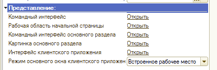
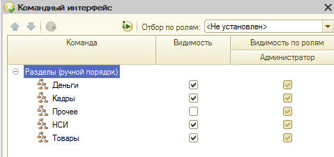
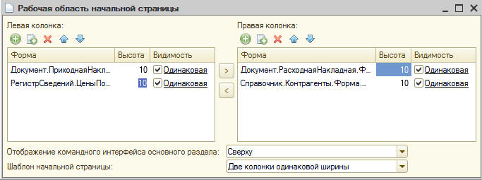
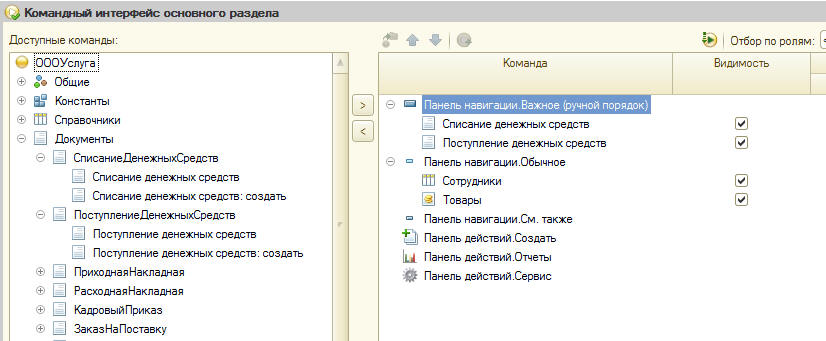
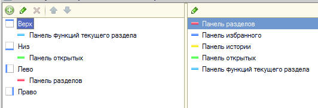
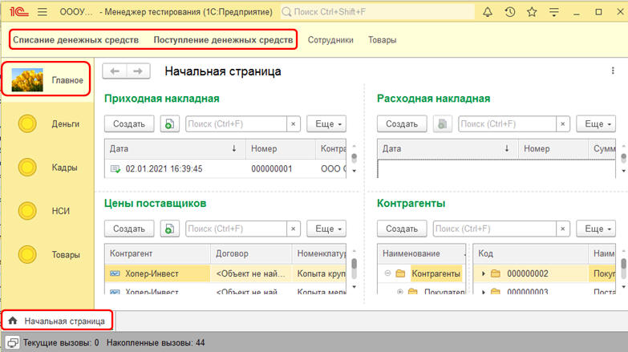
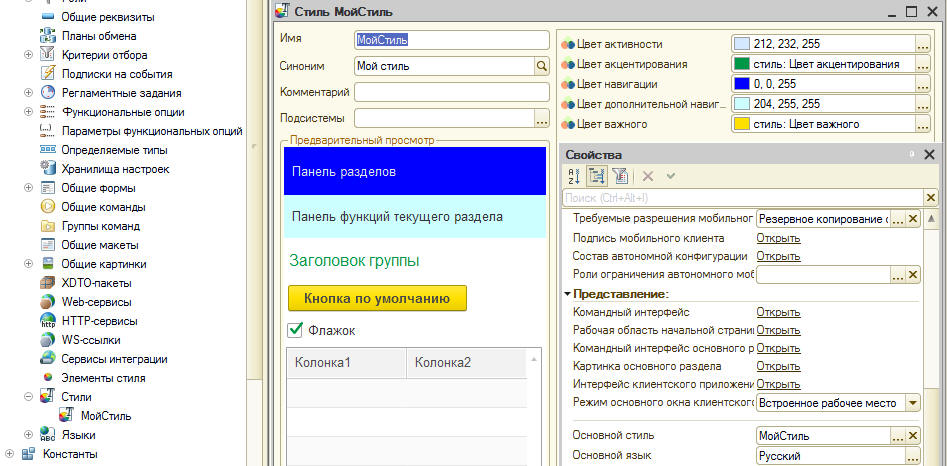

Лабораторная работа № 21-3 Настройка рабочего стола
Техническое задание
Настроить рабочий стол пользователя
Рекомендации к выполнению
1) Откройте свойства корня дерева конфигурации. В раскрывшемся окне содержится много ссылок, позволяющих войти в диалог настройки, рисунок 1. Вам предстоит работать со всеми ссылками раздела ПРЕДСТАВЛЕНИЕ.

2) Откройте ссылку "Командный интерфейс" и установите "флажок" видимости напротив тех подсистем, которые будут отражаться на рабочем столе, рисунок 2.

Рисунок 2 - Настройка командного интерфейса
3) Откройте "Рабочую область начальной страницы" и введите в ее состав документы "Приходная накладная", "Расходная накладная" справочник "Контрагенты" и регистр сведений "Цены поставщиков", рисунок 3. Примечание. На рабочей области рекомендуется располагать форму списка объекта.

Рисунок 3 - Формирование рабочей области начальной страницы
4) Откройте Командный интерфейс основного раздела и включите в состав панели навигации ВАЖНОЕ документы "Списание денежных средств" и "Поступление денежных средств". В панель навигации ОБЫЧНОЕ справочник "Сотрудники" и Регистр накопления "Товары", рисунок 4. Элементы, размещенные в панели навигации ВАЖНОЕ будут выделены полужирным шрифтом.

Рисунок 4 - Формирование командного интерфейса основного раздела
5) Откройте картинку основного раздела и поместите рисунок, откройте интерфейс клиентского приложения и методом "Перетягивания" расположите панели, рисунок 5

Рисунок 5 - Настройка интерфейса приложения
6) Войдите в режим пользователя и посмотрите на результаты выполненных настроек, рисунок 6. На рабочем столе отобразились все настройки:
Панель функций - вверху
Панель разделов - слева
Панель открытых - внизу
Элементы панели ВАЖНОЕ выделены полужирным шрифтом, поверхность рабочего стола заполнена формами объектов.

Рисунок 6 - Результат настройки рабочего стола
7) В ветке ОБЩИЕ создайте новый стиль, в котором установите цветовую гамму. Откройте свойства дерева конфигурации и укажите созданный Вами стиль как основной, рисунок 7. Зайдите в режим пользователя и проверьте результаты Ваших настроек.

Рисунок 7 - Настройка стиля
8) Таким же образом, в свойствах дерева конфигурации установите логотип программы и заставку